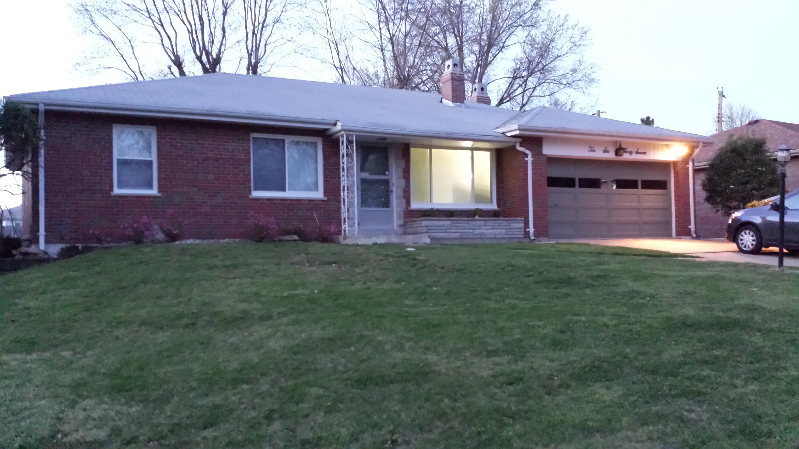
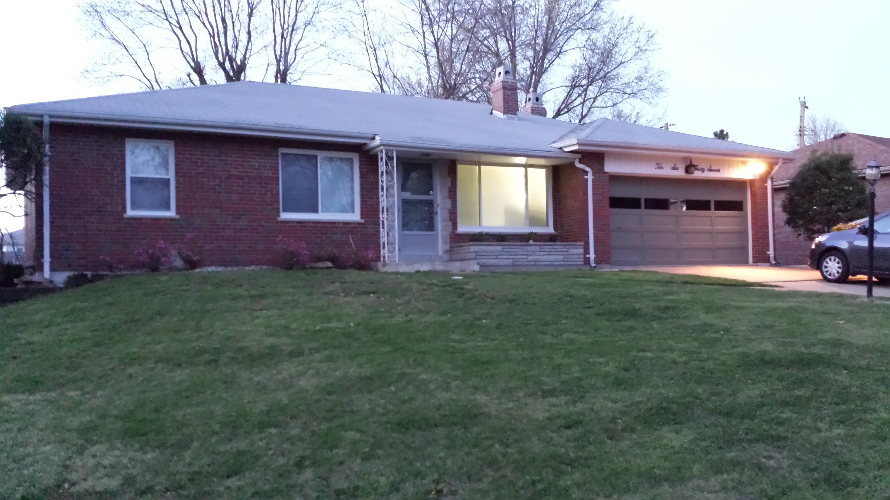

Kathmandu
Kathmandu, my birthplace, is the capital of Nepal and the largest metropolitan city. The short form of Kathmandu is KTM. The city stands at an elevation of approximately 1,400 meters (4,600 ft.) in the bowl-shaped Kathmandu Valley of central Nepal. It has been home to the headquarters of the South Asian Association for Regional Cooperation (SAARC) since 1985. Kathmandu's sister cities Lalitpur and Bhaktapur are integral to Kathmandu's cultural heritage, tourism industry, and economy; therefore UNESCO's World Heritage Site lists all three cities' monuments and attractions together under one heading, "Kathmandu Valley-UNESCO World Heritage Site".

Pokhara
Pokhara is a valley that is surrounded by beautiful, amazing and silent Himalayas. Pokhara has become a major tourist hub of Nepal. It is also known as the city of lakes because natural lakes and rivers decorate it. There are many attractive hills in Pokhara. The city offers a combination of nature and culture and is mostly known as the gateway to the trekking route "Round Annapurna"


Darjeeling
Darjeeling lies in the north of the state of West Bengal and is situated at an altitude of 6,710 ft in Lesser Himalaya. This UNESCO World Heritage Site is noted for its Darjeeling Himalayan Railways and its famous tea industry. Darjeeling is the highest tea exporter and thus, tea tourism in Darjeeling attracts many visitors during the plucking season. The aroma in the hills surrounds international visitors. The tourists in Darjeeling shop for woolen garments, fashion clothes and shawls. The best time to visit Darjeeling is between the months of April to June along with September to December.

Saint Louis
St. Louis, my present hometown, is a major city in Missouri along the Mississippi River. Its iconic, 630-ft. Gateway Arch, built in the 1960s, honors the early 19th-century explorations of Lewis and Clark and America's westward expansion in general. The city has an estimated 2015 population of 315,685. The economy of metro St. Louis relies on service, manufacturing, trade, transportation of goods, and tourism. St. Louis has two downtowns.
 

Cincinnati
Cincinnati is situated on the north bank of the Ohio river in Hamilton County, which is the extreme southwestern county of the state of Ohio. Cincinnati is the third-largest city in Ohio and the 65th-largest city in the United States. Cincinnati is home to numerous structures that are noteworthy due to their architectural characteristics or historic associations.

Dallas
Dallas, a modern metropolis in north Texas, is a commercial and cultural hub of the region. Downtown’s Sixth Floor Museum at Daley Plaza commemorates the site of President John F. Kennedy’s assassination. In the Arts District, the Dallas Museum of Art and Crow Collection of Asian Art cover thousands of years of art.